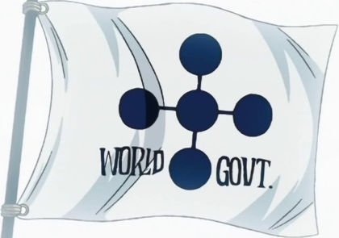

Вселенная мира ONE PIECE воистину огромна. Она наполнена великим множеством неизведанных островов, страшными и огромными тварями, а также невероятными приключениями.
За 23 года существования манги нам показали столько необычных и интересных вещей, что о них можно говорить часами, и здесь вы увидите краткий экскурс в данную захватывающую вселенную.
География ONE PIECE чем-то схожа с таковой у нашей Земли, но с огромными отличиями. Здесь существует всего-лишь один материк, опоясывающий планету и названный Ред-лайном. Также перпендикулярно ему существует особое течение, названное Гранд-лайном, плывя по которому вы рискуете умереть.
Данное течение и материк делят весь мир на четыре части: Норд-блю, Саут-блю, Вест-блю и Ист-блю. Между же морями и Гранд-лайном есть особая зона, прозванная Калм-белтом, где отсуствуют какие-либо течения.
Если в Калм-белте отсутствуют течения, так как же попасть в Гранд-лайн? На пересечении Ред-лайна и Гранд-лайна течения со всех морей сходятся на Реверс-маунтин, откуда, объединяясь, идут в Гранд-лайн
Дьявольский плод — мистический плод мира ONE PIECE, дающий съевшему его необычные способности, зависящие от конкретного плода и его типа.
Некоторые плоды показаны только в аниме, другие — только в манге. Тем не менее, большинство из них появляются в обоих и играют решающую роль в сюжетной линии, где многие главные герои обладают своими силами.
Существует 3 типа фруктов: парамеция, зоан и логия. Парамеция - наиболее распространенный из трёх типов дьявольских плодов. Он дарует своим пользователям различные сверхчеловеческие физические способности или особые возможности, такие как генерация ударных волн, захват на цели и т.д. Пользователи плода типа зоан получают способность превращаться в какое-либо животное и приобретают все его способности. Пользователь также может принимать гибридную форму — смесь человека и животного. Логия - редчайший из трех типов дьявольских плодов, дарует своим пользователям возможность превращаться в элементы неживой природы

В мире ONE PIECE существуеют организации, которые поддерживают баланс в мире. Основную мощь составляют мировое правительство, под началом которого находится морской дозор, а также пираты. Но еще существуют революционная армия, которая считается главной угрозой для существования правительства.